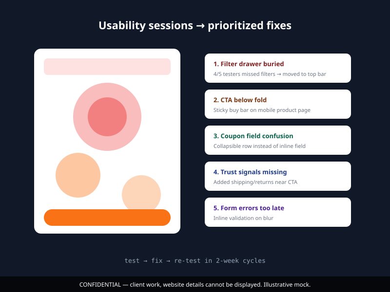

The problem
Two completely different user bases, consumers buying with confidence, businesses evaluating with a process. The original site treated them the same: same layout, same CTAs, same cadence. That meant neither experience resonated.
We also had no system: every page was its own snowflake. Shipping a new product page or campaign took longer than it should.
How I worked
- Two tracks, one system. Separate user journeys for B2C and B2B, but underneath both: one component library, one token set, one design system.
- Rapid prototyping. We tested before we built, low-fi first, get the user decision right, then polish.
- Usability loops. Recurring sessions that fed back into the design backlog; the next sprint always started from what users highlighted, not what we assumed.

Key decisions
1. B2B communicated "process," B2C communicated "desire"
For the B2C side, conversion came from sensory appeal and social proof. For B2B, it came from clarity: what, how it integrates, and what happens after purchase.
2. Prototypes earn their pixels
Low-fi wireframes until the flow was confirmed, high-fi only after logic was proven. That prevented weeks of polishing the wrong thing.
In practice: if you can't explain in 30 seconds how to realize the value, you redesign the flow, not the pixels.